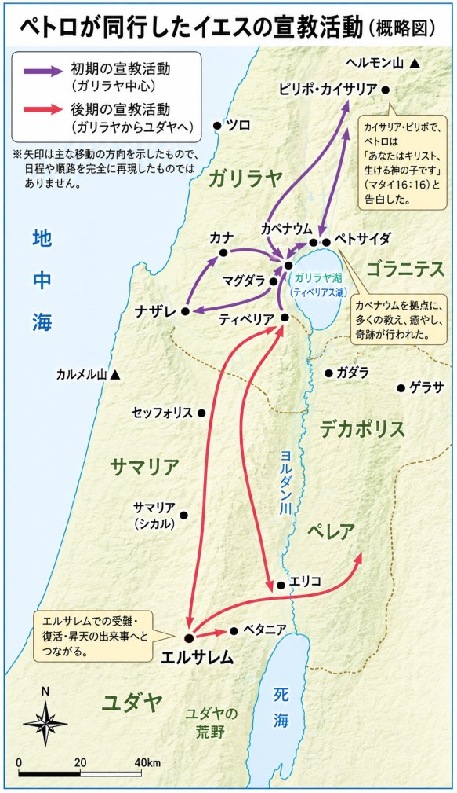
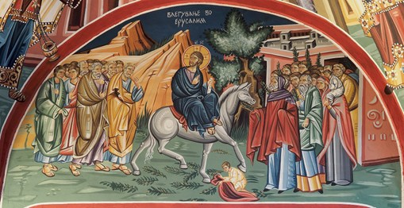
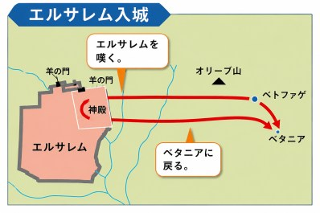
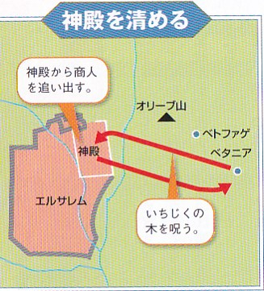
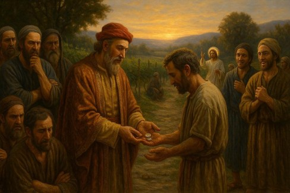
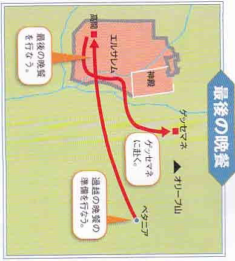
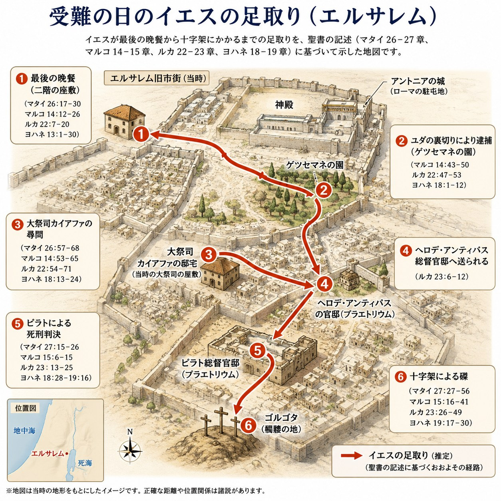
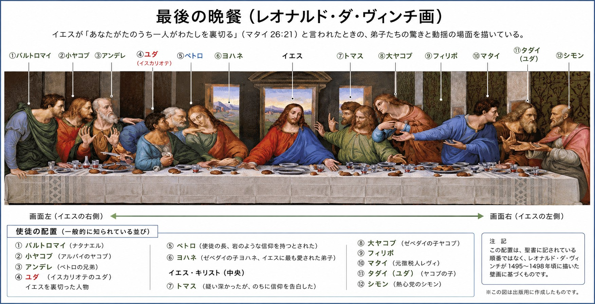

ペトロは長い間、イエスと共に歩んできた。
数々の奇跡を見、群衆の熱狂を経験し、特別な教えにもあずかってきた。その歩みの中で、彼の心には少しずつ「自分は他の者とは違う」という思いが芽生え始めていたのかもしれない。ペトロは、自分の弱さを知らないまま、本気で主に従おうとしていたのである。
ペトロはイエスに従って歩み、多くの出来事を共に経験してきた。その歩みは、王の役人の息子の癒しから始まった三度の「ガリラヤ伝道」（ヨハネ4章46~54節）を経て、やがて終わりを迎える。

ペトロが同行したイエスの宣教活動（概略図）
その後、イエスはエルサレム和ユダヤ地方で「後期宣教」（ヨハネ7章10~39節）を行われた。
この時期の働きは、奇跡よりも、良い羊飼いの譬えやサマリア人の譬えなど、譬え話を中心とした教えが多く語られた。奇跡としては、生まれつき目の見えない人の癒しや、18年間も病の霊に縛られて腰の曲がった女性の癒し（ルカ13章10~17節）などがあった。
さらにイエスは、ヨルダン川東側の地で「ベレア伝道」（ルカ13章22節~19章28節）を行われる。こうした長い旅路の中で、ペトロはイエスにすべてを捧げて従い、多くの経験を積んできた。そのため、いつしか自分は立派な弟子になったかのような錯覚に陥っていたのかもしれない。
ベレア伝道の終わりに近い頃、一人の金持ちの青年がイエスのもとに来た。しかし彼は多くの財産に心を奪われていたため、金持ちの青年が去って行く姿を見ながら、ペトロの心には「自分たちは従っている」という思いが強くなっていたのかもしれない（マタイ19章16~22節）。
この出来事を見て、イエスは弟子たちに言われた。
「金持ちが天の国に入るのは難しい。それは人間にはできないが、神には何でもできる。」（19章23~26節）。
しかし、ペトロの中に金持ちの青年を見下げ、自らの献身をどこか誇る思いを、イエスは見抜いておられたのでしょう。そこで、彼らに大切なことを教えるために「ぶどう園の労働者」の譬えを話されたのだと思われる。
イエスはこれまで、天の御国とはどのような国であり、そこにどのような価値があり、どのような生き方が求められるのかを繰り返し教えてこられた。また、弟子たちを選んでからは、御国の民としてどのように歩むべきかを示してこられた。したがって、この譬えもまた天の御国の価値観を示す教えであると言える。
しかしペトロは、依然として「世の価値観」に縛られていた。どれほどイエスから教えを受けても、完全には世の考え方から離れられない部分があったのである。ペトロは確かにイエスに従う素晴らしい弟子であったが、どこかで「自分はすべてを捨てて従っている」という誇りを持ち、「努力した分だけ報酬が与えられるはずだ」という思いが心の奥にあったのではないだろうか。そのためイエスは、「後の者が先になり、先の者が後になる」と語られた。
この譬えが教えている最も大切なことは、十二時間働いた最初の者にも一時間しか働かなかった最後の者にも、みな一デナリずつの賃金が支払われたことである。この譬えは、人間の功績ではなく、神の恵みによって与えられる救いを示している（エフェソ2章）。
ペトロはイエスにこう尋ねた。「わたしたちは何をいただけるのでしょうか。」
この質問には、
が潜んでいた。
イエスがペトロの質問に答えられたこと自体が、彼の心の中の“誇りの火”をさらに強める危険があった。そのためイエスは、答えるだけでなく、この譬えを通してペトロに警告されたのであろう。
人の心を知っておられるイエスは、ペトロの心が堕落する前に、その中に芽生えつつあった“悪い芽”を摘み取ろうとされた。この譬えは、まさにそのために語られたものだったのである。
ぶどう園の労働者

「ぶどう園の主人は、最后に来た者にも最初に来た者と同じ一デナリオンを与えた」
ペトロは、イエスのお供をしていたが、それから間もなく「ベレア伝道」が終わり、イエスはエリコを経由してエルサレムへと上って行かれた（ルカ19章28節）。ここから受難週が始まる。ペトロは、この受難週において今までとは違ったイエスの姿を見る。

エルサレム入城

神殿を清める

イエスのエルサレム入場（北マケドニアのフレスコ画）
第一日目の日曜日 - イエスはかつての預言者ゼカリヤの預言に基づき、ロバに乗った姿でエルサレムに入場した。
群衆は、エルサレムに入場されるイエスを熱狂的に歓迎した（マタイ21章9~11節）。
それを見たペトロは強い感動を受けた。
第二日目の月曜日 - エルサレムにやってきたイエスは、神殿が商売の場となっていることに激怒し、商人たちを追い出し、宮清めをされた。ペトロは、宮の中で売り買いする者たちを皆追い出されたイエスを見て、驚いてしまった（同21章12~13節）。
第三日目の火曜日 - イエスは祭司長や長老、さらに律法学者やファリサイ人と問答を交わされたが、彼らはイエスに勝つことができなかった。
イエスは律法学者やファリサイ派の人々の偽善を厳しく糾弾し、また世の終わりについての説教をされた（同23章~46節）。

最後の晩餐
ペトロは、これらの出来事をすべて見聞きするうちに、イエスの弟子であることに優越感を覚え、律法学者やファリサイ派の人々を見下すようになっていたのではないでしょうか。
こうして受難週の木曜日（ユダヤの金曜日）を迎え、ペトロは最後の晩餐の席に着いた（同26章26節）。その席上でイエスはユダの裏切りを告げられ、ユダは外へ出て行った（ヨハネ13章30節）。しかし、これを見たペトロと他の十人の弟子たちは、ユダが席を立った本当の理由を知らなかった（同28~29節）。
その後、イエスは弟子たちに向かって、「あなたがたは皆、今夜、わたしのゆえにつまずく」と警告された。特にペトロには、「わたしの行くところに、あなたは今はついて来ることができない」と言われた。なぜなら、「サタンが、あなたがたを小麦のようにふるいにかけることを願い出て、それが聞き届けられた」からだと言われたのである（ルカ22章31節）。
イエスは、この時のペトロの信仰の状態では、自分が捕らえられたときに従い続けることができないことを知っておられた。そこでペトロの信仰がなくならないように祈り、「立ち直ったなら、兄弟たちを力づけてやりなさい」と言われたのである（同22章32節）。
イエスはペトロの弱さも罪も、彼のすべてを知り抜いておられた。だからこそ、イエスに警告されたなら、ペトロは心からへりくだり、イエスにあわれみと助けを求めるべきであった。しかし、ペトロの心には慢心が生じ、自分の姿が見えなくなっていたのでしょう。

受難の日のイエスの足取り（エルサレム）
イエスの警告を無視して、「たとい全部の者があなたのゆえにつまずいても、わたしは決してつまずきません」と強く言い張ったのである。
イエスは、高慢のために自分の姿が見えなくなっているペトロを見て、心を痛められたことであろう。ペトロが何度も警告を退け、「わたしは決してつまずきません」と豪語したため、イエスは「ペトロ、あなたに言いますが、今日、鶏が鳴くまでに、あなたは三度、わたしを知らないと言います」と厳粛に予告された（同34節）。
これほどの警告を受けてもなお、ペトロはへりくだろうとせず、「あなたを知らないなどとは決して申しません」と必死に自分の忠誠を示そうと、さらに醜態をさらしてしまったのである。

最後の晩餐（レオナルド・ダ・ヴィンチ画）